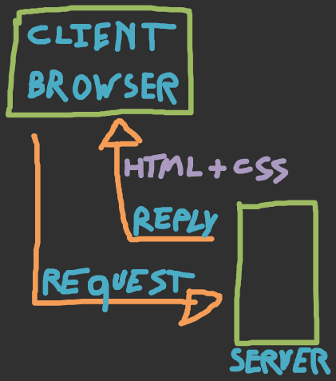
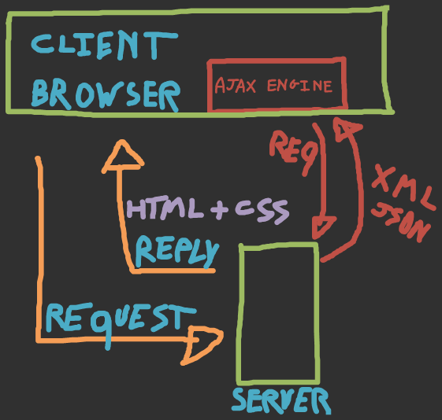
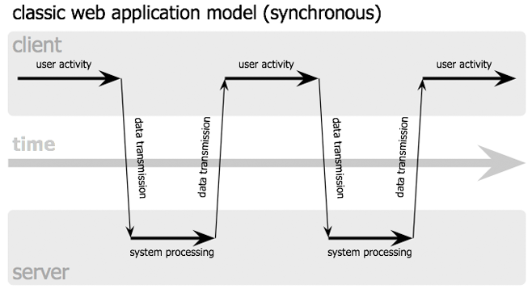
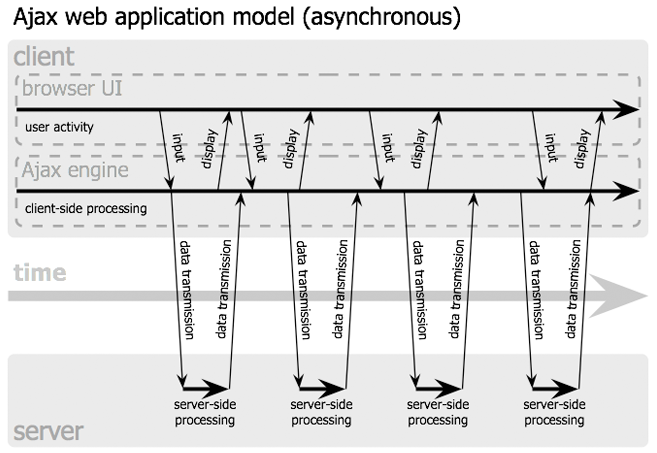

Webtechnology and Webprogramming
Web Scripting
ECMAScript
- Standardized scripting language for client-side scripting on the web
- Dialects:
- JavaScript (Mozilla)
- JScript (Microsoft)
- ActionScript (Adobe)
- Engine-based (interpreter): either part of a layout engine (Gecko, Trident) or a separate engine (Google V8, .NET, Adobe Flash and Flex)
JavaScript
- Superset of ECMAScript
- Most commonly used embedded in HTML pages, interacting with its DOM
- Loading page content or submitting data to the server without reloading the page (Ajax)
- Validating form input
- Animation eg. http://processingjs.org/
- Local event handling, eg. key strokes
JavaScript
- Target language for frameworks in other languages, although originally it was never intended this way
- Google Web Toolkit provides a Java API, which is compiled to JavaScript
- CoffeeScript provides an alternate syntax, inspired by Python and Ruby, which is more concise and readable
- Dart is a JavaScript alternative by Google, which also targets JavaScript
- ...
JavaScript
Debugging
- Firebug: add-on in Firefox (Ctrl + F12)
- F12 tools in IE
- Chrome developer tools (F12)
jQuery
Ajax
Ajax
Asynchronous JavaScript and XML
- Server communication is asynchronous, which implies that display and behavior of the existing page is not interfered
- Based on the XMLHttpRequest object
- Note that JSON is a valid alternative for XML
Classic web application model
Ajax web application model
Synchronous
Asynchronous
Applications
- Asynchronous fetch from a database
- Interactive web applications
- ...
Ajax frameworks
- jQuery
- ASP.NET Ajax
- ...
Note: there are a lot of "Ajax frameworks", but jQuery provides a lot of functionality, which makes most of these frameworks obsolete
Browser independent Ajax queries
$.ajax({
type: "POST",
url: "example.php",
data: "name=John&location=Boston" })
.done( function(msg){
alert( "Data Saved: " + msg ); })
.fail( function( xmlHttpRequest, statusText, errorThrown ) {
alert( "Your form submission failed.\n\n"
+ "XML Http Request: "
+ JSON.stringify( xmlHttpRequest )
+ ",\nStatus Text: "
+ statusText
+ ",\nError Thrown: " + errorThrown ); });